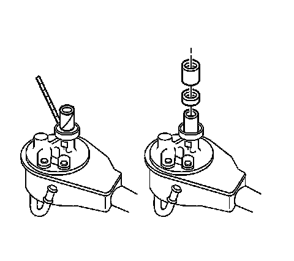

Power Steering Pump Seal: Service and Repair
Power Steering Pump Shaft Seal Replacement
Removal Procedure
1. Remove the power steering pump from the vehicle.

Important: Use the shim stock in order to protect the drive shaft.
2. Use a chisel in order to cut and remove the seal.
Installation Procedure
1. Lubricate the seal using power steering fluid.
2. Use a deep 1 inch tall socket in order to install the seal.
3. Install the power steering pump.